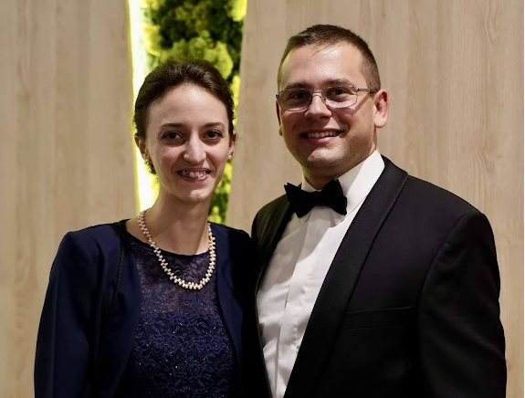
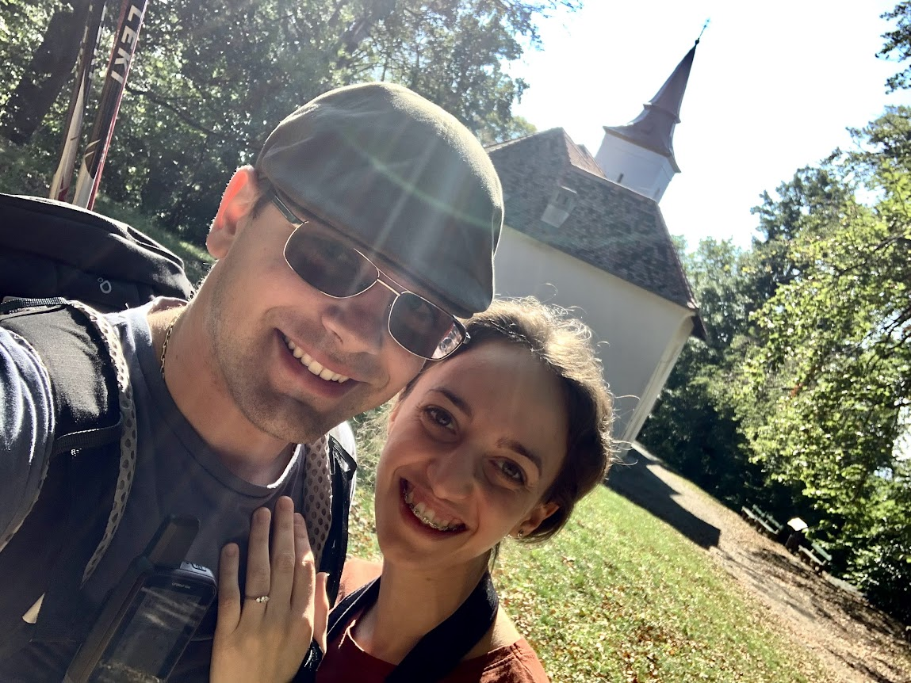
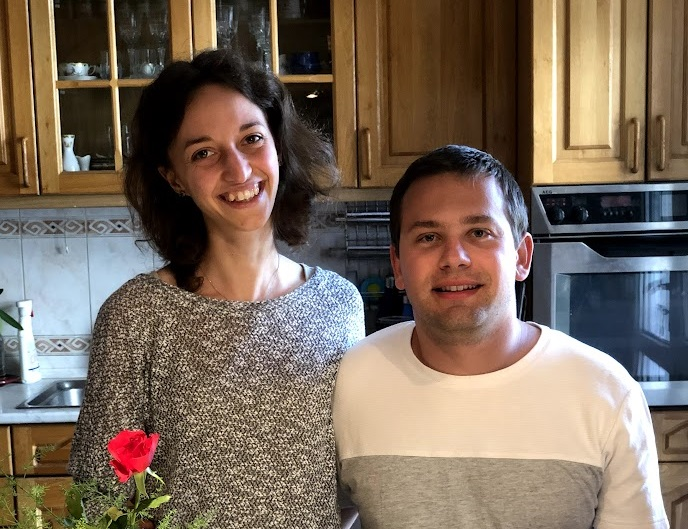

Kedves Családunk és Barátaink!
Örömmel tudatjuk Veletek, hogy
2023. szeptember 23-án
a Jóisten színe előtt örök hűséget esküszünk egymásnak!
Szeretettel hívunk Benneteket,
hogy ünnepeljetek velünk ezen a csodás napon.


